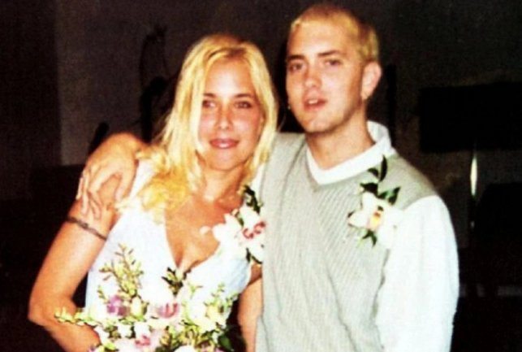

Marshall Bruce Matters III, conocido artísticamente como "Eminem", es un rapero, productor discográfico y actor estadounidense, antes conocido como Slim Shady; nacido el 17 de octubre de 1972.
Pertenece al estilo musical de hip hop y rap, y está activo desde 1988. Ha sacado numerosos discos y álbumes, de los cuales el primero fue The Slim Shady LP. Ha ganado numerosos premios a lo largo de su carrera, entre ellos varios Grammys.

Biografía
Nació en San Joseph, Missouri; y poco después su padre abandona la familia. A partir de ahí es criado por su madre, Deborah Matters, una madre adicta a las drogas sin un trabajo estable. Esto hizo que tuvieran que mudarse muchas veces, haciendo que Marshall tuviera problemas, desde cambio de colegio hasta falta de amigos y de casa donde vivir. Como cambiaba mucho de colegio tenía problemas para relacionarse, haciendo que los demás se metieran mucho con él.
Finalmente se quedaron a vivir en Detroit, cerca de la Octava Milla (8 Mile), la carretra que separa los barrios más bajos de "blancos" y los barrios más bajos de afroamericanos. Una vez allí, un chico mayor que él llamado De Angelo Baili le propinó una paliza que lo dejó en coma durante 10 días cuando tenía 9 años. Tras esto tardó un año en recuperarse, y tenía graves secuelas psicológicas y neurológicas. Fue entonces cuando empezó a desarrollar su creatividad. Una vez se recuperó, su tío, que era un padre para él, le enseñó un vinilo de Reckless, la primera canción de rap que había escuchado nunca.
Desde entonces empezó a interesarse por la música, pero no fue algo importante hasta que escuchó a los Beastie Boys, y entonces supo que quería ser rapero; aunque primero empezó a bailar break dance en la calle para empezar a ganar dinero. En 1987 Deborah, su madre, acogió a una chica más o menos de la edad de Marshall, porque su familia no quería tenerla, se llamaba Kim. Más tarde Kim y Marshall se enamorarían, lo cual no le gustó nada a su madre, la cual echó de casa a Kim, lo que hizo que Marshall se fuera con ella. En 1991, su tío se suicidó, lo cual fue un gran golpe en la vida de Marshall, pues su tío era una de las razones que le ayudaban a sobrevivir en ese momento.
 Kim y MarshallTras eso dejó los estudios con 17 años, tras repetir por tercera vez el noveno grado ( 3º ESO ). Entonces empezó a ir a las batallas locales de rap, lo cual provocó grandes y pequeñas diferencias en él, pues era el único blanco en un “sitio de negros”. Marshall, que se hacía llamar Eminem, empezó a componer y cantar canciones en el sótano de la casa de su madre, con su mejor amigo Proof; al que más tarde le quitarían la vida. Después de todas estas desgracias se haría cada vez más conocido, y sacaría varios álbumes, llamando la atención al rapero Dr. Dre, que lo llevó a lo más alto. También tendría problemas con Kim, ya que en 1995 tuvieron a su hija Hailie Jade Mathers, y a partir de ahí su relación empeoraría. Se divorciaron en 2006 tras retomar y dejar su relación varias veces.
En 2002 protagoniza una película, "8 Mile", que está basada en su historia.
Tráiler en inglés
Álbumes
Canciones más escuchadas (Spotify)
Enlaces